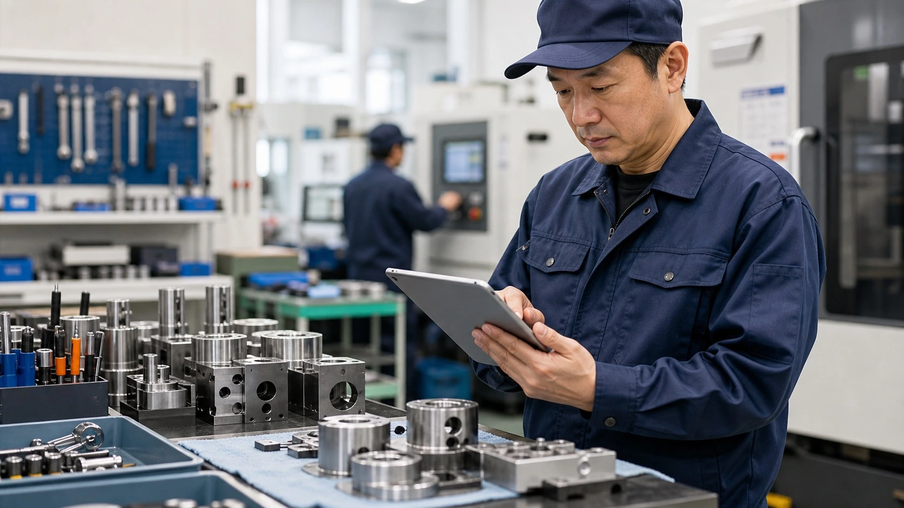

業務改善の例 / 製造業・品質管理
終業前に残った不良写真が、翌朝の改善会議ですぐ使える
不良写真と手書きメモから朝会用の一覧を作り、翌朝は原因と対策の話から始められます。

先に結論
写真を保存するだけで終えず、不良種別・ロット・工程をまとめたメモを翌朝の朝会までに用意します。
製造現場では、検査後の不良写真、手書きメモ、ロット番号、工程情報が終業前に残りがちです。
改善後は、写真とメモから不良の種類、ロット、工程、未チェック点を先に整理しておきます。責任者は一覧を見ながら、出荷可否、原因の見立て、作業者へ伝える内容を確認します。
仕事の変化
翌朝の写真探しをなくし、朝会を原因と対策の話から始める
現場で起きていたこと
画像フォルダ、紙メモ、検査表が分かれ、後で見返しにくくなっていました。責任者が見る頃には、原因を考える前に写真探しから始まっていました。
変えたこと
AIが不良写真、ロット番号、工程、手書きメモを一枚の朝会資料にまとめます。責任者は現物と検査記録を見ながら、原因と対策を話し合えます。
改善後に残るもの
翌朝は資料作りではなく、原因と対策の話から始められます。その分、担当者は原因の検討、出荷可否の判断、作業者への連絡、次の段取りに取りかかれます。
改善後の実感
翌朝の朝会は写真探しをせず、原因と再発防止の話から始められます。
写真が残る
不良写真、手書きメモ、ロット番号が分かれ、翌朝に探し直していました。
朝会で確認する
不良種別、ロット、工程、未チェック点を、朝会で見直しやすい順にまとめます。
原因と対策に入りやすくなる
未確認の項目が一覧になるため、責任者は原因の検討、顧客への説明、若手への教育へ進めます。
検査後の引き継ぎ
終業前の検査台に残った写真を、翌朝の確認メモに変えておきます。
終業前の検査台の横には、傷、寸法ずれ、打痕の写真を撮ったスマホ、手書きメモ、ロット番号を書いた付箋が置かれていました。
若手担当者が写真名を直そうとしたところで、出荷担当から箱詰め確認を呼ばれ、責任者からは「明日の朝会で見せて」と声がかかります。
以前は、翌朝になってから写真フォルダを開き、どのロットの何の不良だったかをメモと記憶でつなぎ直していました。
改善後は写真、手書きメモ、ロット番号、工程名をフォルダへ入れるだけで、不良の種類と朝会で聞く質問が一覧になります。
AIは不良種別、ロット、発生工程、似た写真、確認が足りない項目、作業者へ聞く質問候補を一覧にします。
責任者は一覧を現物や検査記録と照合し、品質判定、出荷可否、原因の見立て、作業者への伝え方を決めます。
改善のイメージ
不良写真、ロット、工程、未チェック点を、朝会で話す順番に一覧化します。
不良写真と工程を分ける
写真ごとにロットと工程が表示されるため、責任者は該当する現物をすぐ見つけられます。

現物と記録を照らし合わせる
写真とメモだけで判断せず、必要な箇所は現物や検査記録と照らし合わせて確認します。

朝会で見直しから始める
朝会では、写真そのものではなく、確認済み・未チェック・要判断の区分から見始められます。
導入前
導入前は、検査記録の整理の前に資料探しと見落としの不安がありました。
画像フォルダ、紙メモ、検査表が分かれ、後で見返しにくくなっていました。
その日の出荷対応に追われ、改善会議の準備が翌朝に残っていました。
ベテランの判断理由が言葉にならず、若手へ伝わりにくい状態でした。
仕事の流れ
写真とメモを入れると、翌朝の朝会資料ができます。
不良写真、手書きメモ、ロット番号、工程情報を同じ場所に集めます。
傷、寸法ずれ、打痕の写真へ、ロット番号と発生工程を添えます。
判断が必要な箇所や情報が足りない箇所を、未チェック点として残します。
品質判定、出荷可否、原因の見立て、作業者への伝え方は責任者が目を通します。
人とAIの分担
AIが写真を朝会資料にまとめ、責任者は現物を見ながら原因と対策を決めます。
AIで先に進める作業
- 不良写真の分類
- 手書きメモの要約
- ロット・工程別の整理
- 改善会議用メモの下書き
人が決めること
- 品質判定と出荷判断
- 原因特定と対策決定
- 作業者への指導
- 顧客報告の最終確認